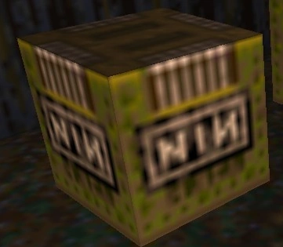
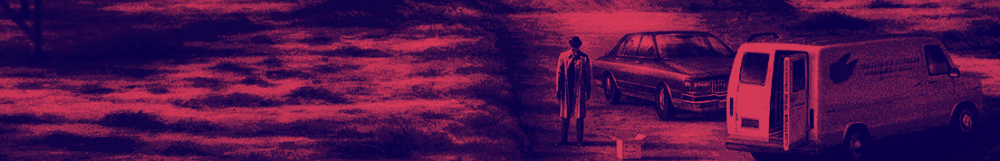
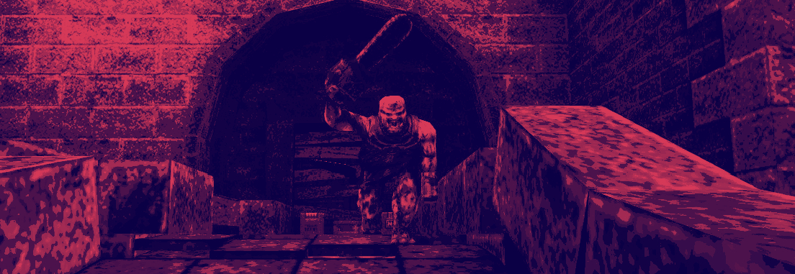

WHAT ITS LED TO
everything i will write will always come back to Quake, the 1996 video game developed by Id Software and published by GT Interactive, one of my all time favorites.
the soundtrack was made by NIN, and was paid homage to via the nailgun's ammo.

A special edit of closer was featured in the opening of david fincher's Se7en. it was remixed by english experimental group; coil and danny hyde. also one of my favorite movies.

here are other works reznor has contirbuted to.
- lost highway'ssoundtrack
- david bowie's im afraid of americans
- world traveler's soundtrack
- slam bamboo
- marylin manson's anti-christ superstar
- call of duty black ops II soundtrack
here are composing works in tandem with longtime collaborator, and the only other member of nin since 2016, atticus ross
- the social network
- the girl with a dragon tattoo
- gone girl
- patriots day
- the watchmen (show)
- bird box
- disney's film soul
- the killer
